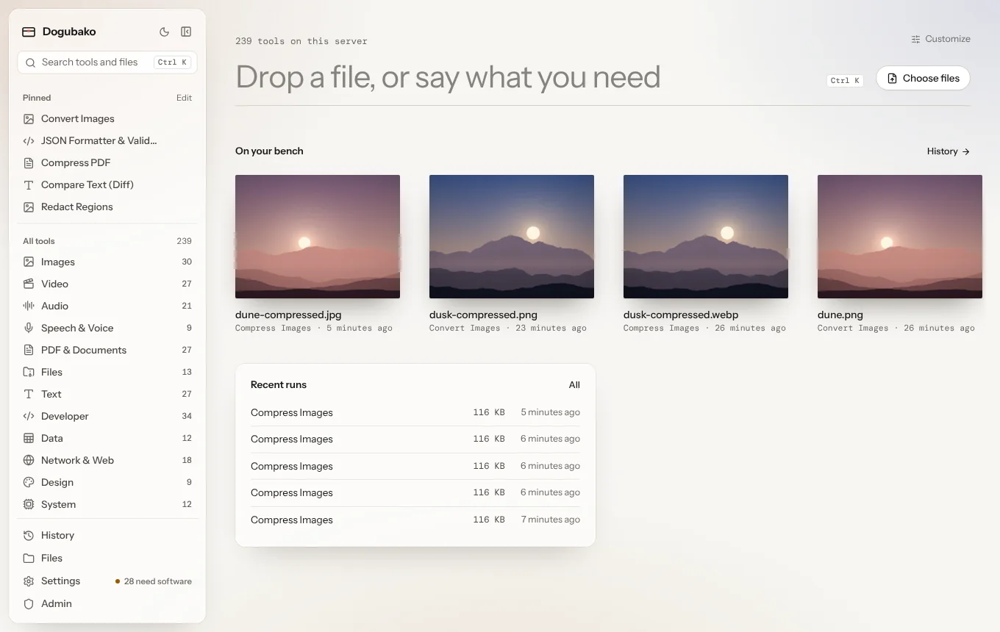
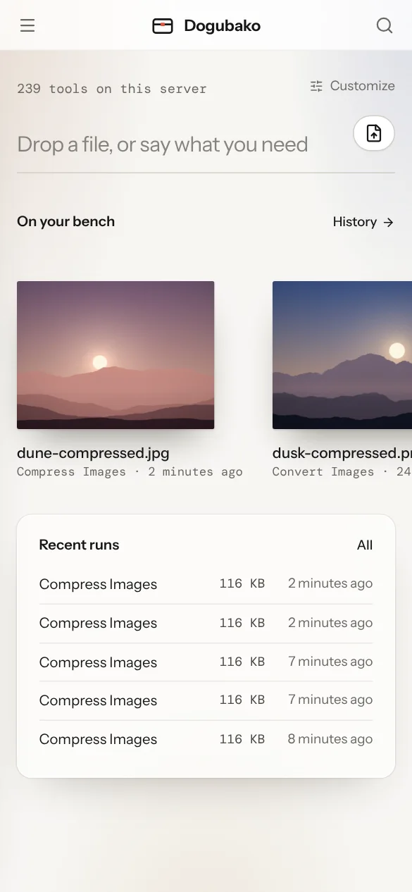
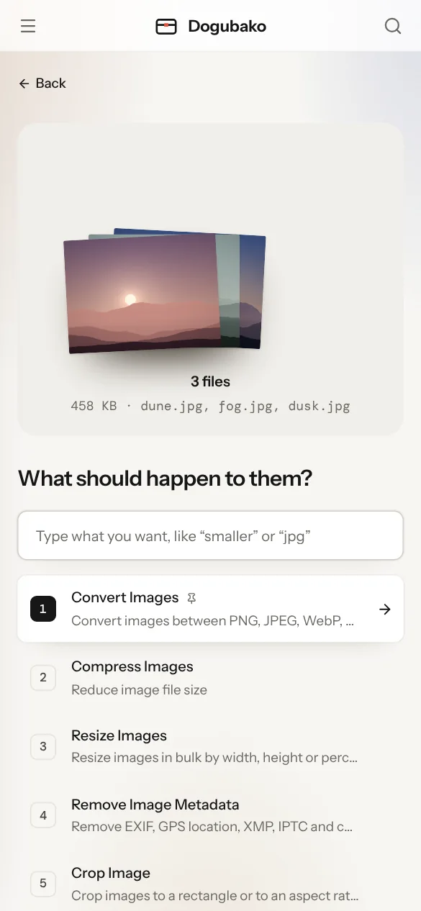
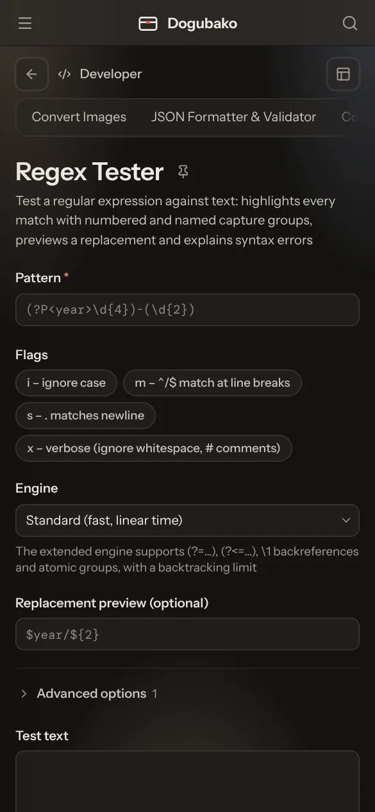
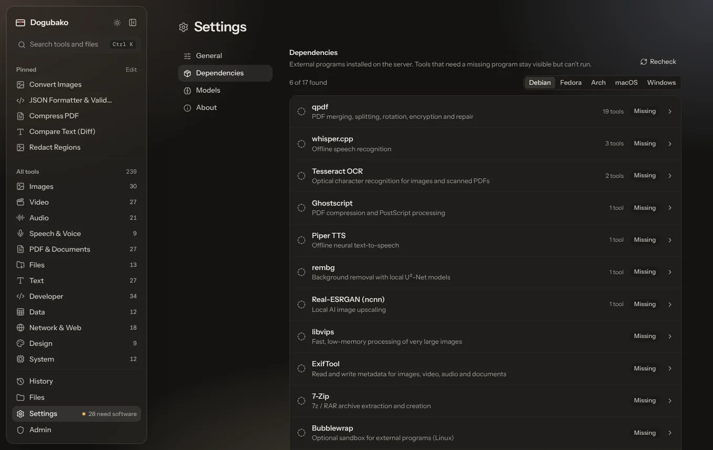

Files look like what they are
Photos sit on the bench as photos, PDFs as a stack of pages, video as a strip of film and audio as a waveform. You always know what you’re holding.
道具箱 dōgu-bako, “toolbox”
249 tools for images, video, audio, speech, PDFs, files, text, code, data, networks, design and your system. Free and open source. Nothing leaves your computer unless you host it yourself.
The trailer is on its way
A 72-second look at Dogubako, from dropping a file to getting it back. It will play right here.
A quick tour
Dogubako replaces the dozens of single-purpose sites and small apps you reach for every week. It looks like paper, it feels physical, and it stays out of the way.

Photos sit on the bench as photos, PDFs as a stack of pages, video as a strip of film and audio as a waveform. You always know what you’re holding.
Drop a file and the likeliest tools come first. Type plain words like “smaller” or “jpg” and it understands.
Hide the sidebar, pin your favourite tools to Alt 1–9, reorder the home screen and pick light, dark or frosted.
The same interface runs as a desktop app, in your browser and on your phone, with keyboard shortcuts for everything.



What’s in the box
Built on mature open-source engines like FFmpeg, libvips, ExifTool, qpdf, Tesseract and whisper.cpp, with fast native code for everything that doesn’t need them.
Convert HEIC, AVIF and WebP, batch resize and compress, crop, watermark, strip metadata, blur faces, OCR, remove backgrounds and upscale.
Convert and compress to a target size, trim, merge, crop, GIF to video and back, stabilize, pull frames, add or burn subtitles.
Convert, normalize loudness, trim and split, remove silence, denoise, EQ, fades, waveforms, spectrograms, tags and cover art.
Offline transcription to TXT, SRT, VTT or Markdown, language detection, speaker turns and text to speech, all on your machine.
Merge, split, reorder, compress, make searchable with OCR, extract text and images, watermark, number pages, encrypt and fill forms.
Checksums, archives with zip-bomb protection, duplicate and large-file finders, folder compare and batch rename with a preview.
Case, counts, sort and dedupe, diff, regex replace, encodings, Markdown and HTML, and text out of Office, EPUB and PDF files.
JSON, YAML, TOML and XML, Base64 and hex, UUIDs, hashes, timestamps, regex, JSONPath and jq, JWTs, SQL, cron, QR and barcodes.
View, filter, sort, clean and summarize CSV, open spreadsheets, convert JSON and CSV, validate schemas and export to SQL.
DNS, WHOIS, HTTP header and security checks, TLS certificates, URL tools, subnet planning and connectivity tests.
Palettes and palette extraction, WCAG contrast, gradients, canvas resize, compositing and styled QR codes.
An overview dashboard for CPU, memory, disks, battery health, hardware, processes and temperatures.
One toolbox, every way in
Each tool is written once. The app, the command line, the HTTP API and the MCP server are all built from that one description and run by the same engine, so they always agree.
No account, no telemetry, no paywall. Drop files onto the window and they open in the right tool. Dogubako tells you which engines are missing and gives you the exact command to install them.
Download
Pipe text in, point it at files, and script whole batches. Exit codes and output are stable, so it fits in shell scripts and CI.
CLI guide# find a tool
$ dogubako tools search pdf
$ dogubako image convert photo.heic --format webp
$ dogubako video compress talk.mov
$ dogubako pdf merge a.pdf b.pdf -o merged.pdf
$ echo '{"b":1}' | dogubako dev jsonRun Dogubako on a home server, a NAS or a VPS with all the heavy engines installed once. Reach it over your LAN or Tailscale from any browser, including your phone.
Self-hosting guide$ docker compose up -d --build
# the first-run setup token
$ docker compose logs dogubako | grep "Setup token"
$ open http://localhost:8420Upload a file, run any tool, and download the result. The OpenAPI document is generated from the same tool descriptions, so it is never out of date.
API reference# every endpoint, always current
GET /api/v1/openapi.json
# upload a file, run a tool, fetch the result
POST /api/v1/files
POST /api/v1/tools/image.compress/run
GET /api/v1/jobs/{id}?wait_seconds=30
GET /api/v1/files/{id}/content
# every request: Authorization: Bearer dgb_…Plug Dogubako into any MCP client. Locally over stdio, or from a shared server over HTTP. Compact discovery keeps 249 tools from flooding the agent’s context.
MCP guide# a local agent
$ claude mcp add dogubako -- \
dogubako mcp serve --discovery compact
# a shared server, one token per agent
$ claude mcp add --transport http dogubako \
https://tools.example.ts.net/mcp \
--header "Authorization: Bearer dgb_…"Agent-ready, not agent-first
Run one central server with the heavy engines and hand each agent a scoped token. An image bot may resize and blur. A media bot may transcode and transcribe. Neither can see the other’s files or touch your system tools.
Accounts and agentsdgb_••••••••••••7Kq2
dgb_••••••••••••p9Xe
$ dogubako users create media-bot --role agent \
--allow 'video.*' --allow 'speech.*'
$ dogubako tokens create --user media-bot --name laptopPrivate and safe by construction
The desktop app needs no account and sends nothing anywhere. Self-host it and your files only travel to a machine you own.
External programs run directly, with timeouts, resource limits and optional bubblewrap sandboxing.
Files are addressed by id and checked against their owner on every request. Archives are guarded against bombs and path tricks.
On a shared server, tools that fetch URLs refuse to reach into your private network by default, and every action is written to an audit log.
Licensed under the GNU AGPL v3.0 or later. No telemetry, no paywalls, and the code is all there to read.
FFmpeg · ImageMagick · libvips · ExifTool · qpdf · Poppler · Ghostscript · Tesseract · whisper.cpp · Piper · LibreOffice · Pandoc · 7-Zip
Get Dogubako
The first alpha is almost here. Until the installers are published, you can build it from source in a few minutes.
# build the desktop app
$ git clone https://github.com/Mischa-dev/Dogubako && cd Dogubako
$ (cd web && npm ci && npm run build)
$ (cd apps/desktop/src-tauri && cargo tauri build)
# or just the CLI
$ cargo install --path crates/cliOptional engines unlock more tools. dogubako deps lists what’s missing and the command to install it on your system.